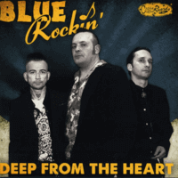

Blue Rockin' - Deep From The Heart (Album, 2012)
01 - Running High (3:31)
02 - Every Hour 'N' Every Minute (3:00)
03 - Bigmouth (2:59)
04 - Hate To Love You (3:20)
05 - Old Car (2:55)
06 - Temptation (3:20)
07 - I'm Gonna Leave You (2:59)
08 - Killer Depression Blues (3:00)
09 - Party In The Woods (3:09)
10 - Evil Vodka Shots (2:30)
11 - Made For Rock 'N' Roll (2:07)
12 - Deep From The Heart (3:42)
© Crazy Love Records :: [CLCD64330]
Notes
Germany.
Joe Tedesco - Double bass, Vocals
Burnout Bruno - Drums, Backing vocals
Pete Patrone - Guitar, Backing vocals
Producer, Mixed by Blue Rockin'
Producer, Mixed by, Mastered by Uli Reisse-Gross
All songs are written-by (or credited to) Joe Tedesco
reference information: Discogs®
Review
043/366 (Project 366)
Strong and gruff Modern Rockabilly Rock'n'Roll with high influence of Psychobilly. As they wrote "Rockin' boogie psycho trash". Yes, quite around but pretty melodious still. I need to take it carefully.